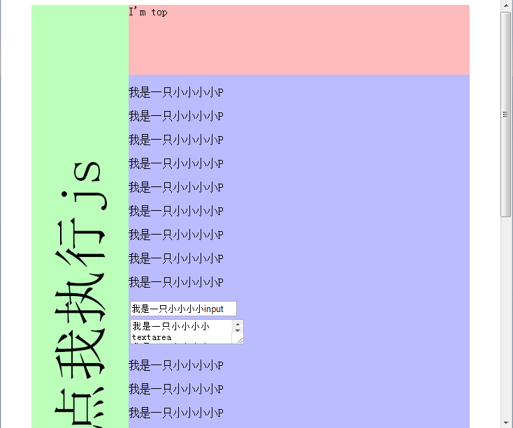

我们在访问到页面中的元素后，就可以问它各种问题了，比如你的height是多少？你的width又是多少。它们都会很诚实的回答，前提是~它能明白你的语言。
这一节介绍一些关于获取元素大小和位置的方法。
例8：有如下页面，填写test函数体，使得执行后alert出mainDiv中的textarea元素的实际width和height。

HTMLExample8.html
解释：本例介绍scrollHeight和scrollWidth属性。他们被用作获取元素的实际高度和宽度。所谓实际高度，就是内部内容的高度，例如本例中的textarea他看起来不高，但由于滚动条的存在，实际高度可能很高。
步骤：
HTMLExample8.html
我们可以看到，实际alert出来的scrollHeight是很大的，原因就是这是实际高度，会把滚动条计算进去。
相应的，我们有offsetWidth和offsetHeight用于获取可视化宽度和高度。
例9：在例8的页面中，填写test函数体，使得执行后alert出mainDiv中的input元素的相对浏览器可视区域的Top。
解释：本例介绍offsetTop属性，他被用作获取元素的相对父容器的上边距。同时还介绍scrollTop属性，他被用作获取竖直滚动条偏移量。
步骤：
HTMLExample9.html
第6行，通过循环来累加offsetTop的值。
第11行，通过body.scrollTop获取到滚动条当前偏移量。
这里出来一个概念父容器，它是对最近的动态定位的包含元素的引用，可以理解为能决定本元素定位的最近的父元素。
关于offsetParent的概念有点麻烦，欲知详情可以狠狠的点击这里：定位我的父亲究竟是谁？
当往下拉动滚动条，使input元素不在可视区域内时，alert出来的值会变成负数。
相应的，我们有offsetLeft和scrollLeft俩个属性，对应左边距和横向滚动条的偏移量。
好啦，这一节就到这里，我们来总结一下：